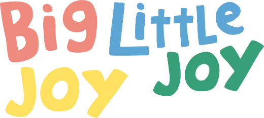

Big Joy Pop-up
Hội chợ cộng đồng, nơi các Little Joy gặp gỡ và góp quỹ qua hoạt động bán hàng.
Sắp được bật míThông tin tham dự và vé chưa công bố.
Đồng hành cùng POET
Cá nhân cùng POET
Bạn chọn cách góp sức.
POET cùng bạn đi tiếp.
Ủng hộ trực tiếp vào quỹ, hoặc đón những hoạt động gây quỹ tiếp theo của POET.
Chọn số tiền, để lại lời nhắn và tiếp tục đến trang thanh toán PayOS để nhận mã QR.
Ủng hộ ngayTừ 10.000 đ. Không cần tạo tài khoản.
Hội chợ cộng đồng, nơi các Little Joy gặp gỡ và góp quỹ qua hoạt động bán hàng.
Sắp được bật míThông tin tham dự và vé chưa công bố.
Những món merch gây quỹ mang tinh thần vui chơi cùng POET.
Sắp được bật míSản phẩm, giá và thời gian mở bán chưa công bố.
Doanh nghiệp cùng POET
Cùng góp sức từ chính công việc và giá trị mà thương hiệu đang theo đuổi mỗi ngày.

Big Joy Little Joy
Một phần doanh thu của mỗi Little Joy, khi được góp lại, sẽ trở thành điều kiện học tập và vui chơi tốt hơn cho các em.
Lịch trình dự kiến theo hồ sơ Mùa 6. Chọn từng chặng để tìm hiểu.
Little Joy to Big Joy
10 cột mốc từ 1 đến 40 triệu đồng. POET cập nhật tiến độ hàng tuần và nâng quyền lợi theo mức gây quỹ đạt được.
Mỗi mức gồm quyền lợi của các mức trước. Nội dung dưới đây là phần bổ sung ở từng mốc theo hồ sơ đồng hành; chi tiết triển khai được hai bên thống nhất.
Cột mốc đồng hành
Quyền lợi nền tảng ở mọi mức.
Cột mốc đồng hành
Bao gồm toàn bộ quyền lợi của các mức trước, cộng thêm:
Giữ quyền lợi ở các mốc trước.
Cột mốc đồng hành
Bao gồm toàn bộ quyền lợi của các mức trước, cộng thêm:
Giữ quyền lợi ở các mốc trước.
Cột mốc đồng hành
Bao gồm toàn bộ quyền lợi của các mức trước, cộng thêm:
Cột mốc đồng hành
Bao gồm toàn bộ quyền lợi của các mức trước, cộng thêm:
Cột mốc đồng hành
Bao gồm toàn bộ quyền lợi của các mức trước, cộng thêm:
Cột mốc đồng hành
Bao gồm toàn bộ quyền lợi của các mức trước, cộng thêm:
Cột mốc đồng hành
Bao gồm toàn bộ quyền lợi của các mức trước, cộng thêm:
Cột mốc đồng hành
Bao gồm toàn bộ quyền lợi của các mức trước, cộng thêm:
Giữ quyền lợi ở các mốc trước.
Giữ quyền lợi ở các mốc trước.
Cột mốc đồng hành
Bao gồm toàn bộ quyền lợi của các mức trước, cộng thêm:
Bản tham khảo ghi lịch Pop Up 20–21/12; lịch Mùa 6 dự kiến 20–22/12/2026. Bản PDF cập nhật đang chờ xác nhận.
Nhà tài trợ
Hỗ trợ hiện kim hoặc nguồn lực thiết thực cho Công viên niềm vui. Mỗi đề xuất được POET trao đổi theo nhu cầu điểm trường và khả năng của đơn vị.
Góp sức cho dự toán 121.950.000 đ của Mùa 6: vật phẩm học tập, đồng phục, góc trò chơi và hoạt động tại trường.
Trao đổi cơ hội tài trợCác nhu cầu trong kế hoạch gồm quạt treo tường, xe đạp, dụng cụ học tập, vở, áo đồng phục và nguồn lực cho góc trò chơi.
Trao đổi cơ hội tài trợĐây là gợi ý để bắt đầu trao đổi. Hình thức ghi nhận, quyền lợi và quy trình cụ thể cần được hai bên xác nhận trước khi thực hiện.
Bắt đầu bằng một cuộc trò chuyện
Chia sẻ ý tưởng, sản phẩm hoặc cách bạn muốn đồng hành. Chúng mình sẽ trao đổi phương án phù hợp.
poet.npo@gmail.comTrưởng Ban Điều Hành
Trưởng Ban Đối Ngoại
Tình nguyện viên POET
Một nơi để học hỏi và trải nghiệm qua những việc thật.
Các thành viên cùng chuẩn bị hoạt động, kết nối nguồn lực và góp sức cho cộng đồng. Mỗi mùa là một dịp để làm việc cùng nhau.

Thông tin tuyển thành viên
Đợt tuyển, vị trí và cách đăng ký sẽ được cập nhật khi có thông báo chính thức.
Công việc ở POET
Nhìn gần hơn một chút
Danh sách video và nội dung giới thiệu đang chờ POET lựa chọn.